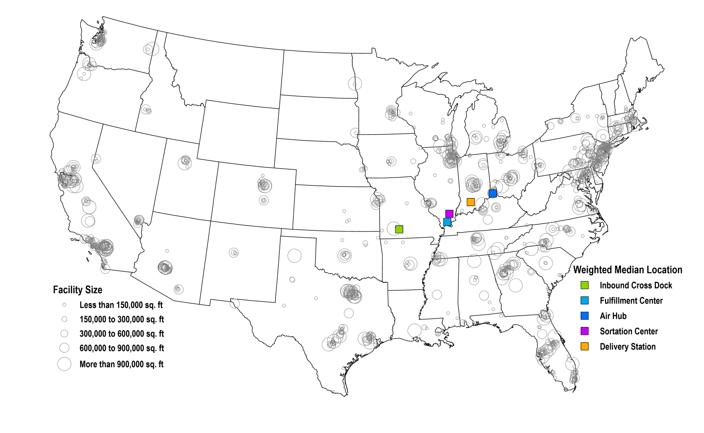
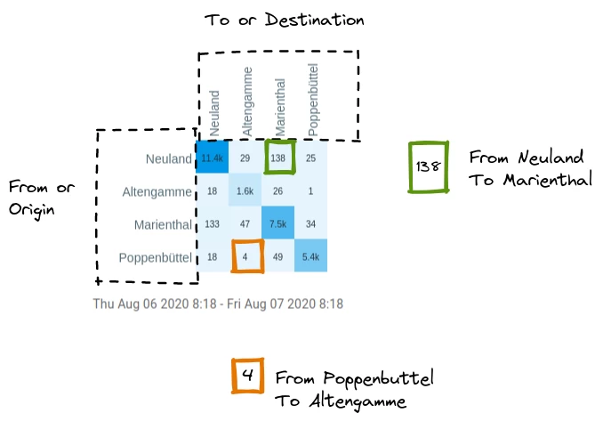

Анализ размещения-распределения
1 Общие сведения
Анализ размещения-распределения (location-allocation analysis) необходим для решения двух основных задач:
поиск оптимального размещения объекта относительно точек спроса с учетом минимизации транспортных расходов (времени в пути или затрат на перевозку), например, размещение экстренных служб, которые должны располагаться так, чтобы время их прибытия было минимальным;
поиск оптимального распределения от размещаемого нового объекта до точек спроса с учетом минимизации транспортных расходов, например, размещение склада, с которого осуществляется доставка, или размещение даркстора службы доставки, чтобы максимально охватывать зоной доставки ближайшее окружение.
Основная часть решения таких задач сводится к определению медианного расположения: необходимо таким образом разместить медианную точку, чтобы минимизировать среднюю стоимость транспортировки с учетом спроса или расстояние между точками спроса и сервисом1. Параметры решения будут зависеть от трех показателей:
количество точек сервиса, которые необходимо разместить;
количество, тип и размещение точек спроса - точки спроса могут представлять собой как индивидуальные локации, так и центры полигонов (например, административно-территориальных единиц), наиболее простым случаем здесь будет являться небольшое число равномерно распределенных по территории точек спроса;
тип рассчитываемого расстояния.
Фактически решение этой задачи сводится к линейной оптимизации.
\[ Min: \sum_{a} \sum_{b}g(Q(a,b)),\ Q(a,b)\geq0 \]
где \(Q(a,b)\) - трафик между источником \(a\) и пунктом назначения \(b\) , \(g\) - функция стоимости.
То есть \(g(Q(a,b))\) - транспортные расходы, связанные с перевозками из точки \(a\) в пункт назначения \(b\).
Для анализа городской среды наиболее простым примером является поиск оптимального расположения объектов сервиса так, чтобы их зона обслуживания охватывала как можно больше горожан (потребителей этих сервисов) при минимальном до них расстоянии.


2 Определение ближайшего сервиса на основе матрицы старт-назначение
В этой работе мы определим ближайшую локацию сервиса относительно жилых домов с использованием матрицы старт-назначение.
Матрица старт-назначение - таблица, содержащая в себе значения времени или расстояния перевозки между всеми возможными парами стартовых точек и точек назначения.

Практическое занятие основано на туториале.
2.1 Исходные данные
Для расчетов нам необходимо три набора данных:
жилые дома (полигоны) - точки спроса, которые будут служит стартовыми точками для расчета матрицы старт-назначение;
точки сервиса (точки), которые будут служить конечными точками при расчете матрицы старт-назначение (вы можете выбрать точки сервиса, которые посчитаете нужным);
улично-дорожная сеть (линейные объекты) для расчета расстояния или времени в пути.
Все данные следует загрузить из OSM с использованием плагина QuickOSM.
Как пользоваться плагином описано по ссылке
Для загрузки жилых домов будет использован запрос building=apartments.
Для точек сервиса можно использовать одно из значений ключа amenity (подробнее здесь) или shop (подробнее про него здесь). Здесь будут использованы супермаркеты, поэтому был использован запрос shop=supermarket .
Объекты улично-дорожной сети определялись по запросу highway=primary or highway=secondary or highway=tertiary.
В нашем пример для построения маршрутов будут учитываться только наиболее крупные городские магистрали для ускорения и упрощения расчетов, что может привести к не очень реалистичной картине доступности сервисов. Если вы хотите выполнить расчет более корректно, лучше будет включить в него и более мелкие улицы. Полный перечень типов дорог и значений ключей для них приведен по ссылке.

Чем больше будет ваша территория для анализа, тем дольше будет осуществляться расчет. То же самое касается и количества объектов: чем больше у вас домов или точек сервиса, тем дольше будут идти расчеты.
2.2 Расчет матрицы старт-назначение
Для расчета матрицы воспользуемся уже знакомым нам по прошлому семестру плагином QNEAT3.
Но предварительно нужно подготовить наши данные о жилых домах: пока они у нас представлены в виде полигонов, но плагин может осуществлять расчеты только между двумя слоями точечных объектов, поэтому необходимо из полигонов получить точки.
Перейти от точек к полигонам мы можем либо построив центроиды, либо воспользовавшись инструментом Точка на поверхности.
В первом варианте мы получим геометрические центры полигонов, но в случае сложной формы зданий, они могу лежать за его пределами, тогда как при использовании инструмента Точка на поверхность полученные точечные объекты будут гарантированно размещены внутри полигонов.

В данном случае было выбрано создавать точки для каждой части мультиполигонов, чтобы не были потеряны отдельные части зданий.

Для улучшения качества расчетов можно воспользоваться не просто центром здания, а точками подъездов.
Далее построим матрицу старт-назначение. Для этого воспользуемся инструментом OD Matrix from Layers as Lines (m:n). В данном случае мы построим не просто таблицу, а векторный линейный слой, в котором будут соединяться все возможные пары дом-супермаркет.

В качестве необходимых параметров следует указать:
network layer - слой, содержащий объекты улично-дорожной сети;
from-point layer - слой стартовых точек;
unique point ID field - уникальный идентификатор стартовых точек;
to-point layer - слой конечных точек;
unique point ID field - уникальный идентификатор конечных точек;
optimization criterion - показатель, минимизируемый при расчете маршрута: кратчайший или быстрейший).

В дополнительных параметрах укажем среднюю скорость пешехода - 5 км/ч (default speed) и стиль генерации линий - по прямой (generated matrix geometry style). Второй вариант генерации линий будет повторять сегменты улично-дорожной сети, но такое построение требует большего времени и ресурса компьютера, поэтому остановимся на более простом варианте.
По результатам расчета вы получите довольно неясную картинку, в которой будет много пересекающихся между собой линий - это графическая интерпретация матрицы старт-назначение.

Если вы откроете таблицу атрибутов полученного слоя, вы увидите собственно матрицу старт-назначение.

Обратите внимание, что расстояние в пути (cost) представлено сразу четырьмя атрибутами:
entry_cost - расстояние, которое нужно пройти, чтобы от стартовой точки попасть на ближайший сегмент улично-дорожной сети;
network_cost - расстояние, которое будет пройдено только по сегментам улично-дорожной сети;
exit_cost - расстояние, которое нужно пройти от ближайшего к конечной точке сегмента улично-дорожной сети до конечной точки;
total_cost - сумма перечисленных выше расстояний.
2.3 Определение ближайшего объекта сервиса
Последний шаг нашего расчета - это из всех возможных пар жилой дом-супермаркет найти те, которые расположены ближе всего друг к другу. Для этого мы выполним SQL-запрос.
В качестве источника данных следует выбрать вычисленную матрицу старт-назначение (в моем случае это слой Output OD matrix), а сам запрос будет выглядеть следующим образом:
select origin_id, destination_id, min(total_cost) as shortest_distance, geometry
from input1 group by origin_idТак как структура матрицы стандартна, то и запрос будет выглядеть у всех одинаково.
Обратите внимание на то, что в запросе использован поиск минимального значения для поля total_cost, так как нам необходимо найти ближайшие к жилым домам супермаркеты, кроме того здесь использован псевдоним этого поля (задается с помощью as).
Также следует отметить, что необходимо включать в запрос поле geometry, так как без него будет осуществлен только поиск прочих атрибутов и геометрия будет исключена.
В результате выполнения запроса будет получен новый слой, показывающий жители каких домов наиболее вероятно будут ходить в какие магазины, так как эти магазины являются к ним ближайшими. Также этот результат можно рассматривать как зоны обслуживания магазинов.

Процесс может быть автоматизирован с помощью создания геомодели.
Пример геомодели для этого расчета можно скачать по ссылке.
Footnotes
Один из классических методов решения медианной задачи описан по ссылке↩︎
Источник: https://transportgeography.org/contents/methods/location-allocation-models/weighted-median-location-amazon-distribution-facilities/↩︎
Источник: https://www.esri.com/about/newsroom/wp-content/uploads/2018/10/solving-a-public-health-problem.pdf↩︎
Источник: https://docs.platform-xyzt.ai/articles/origin-destination/introduction.html↩︎